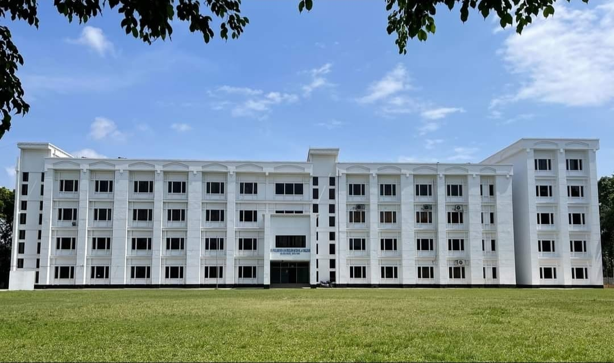
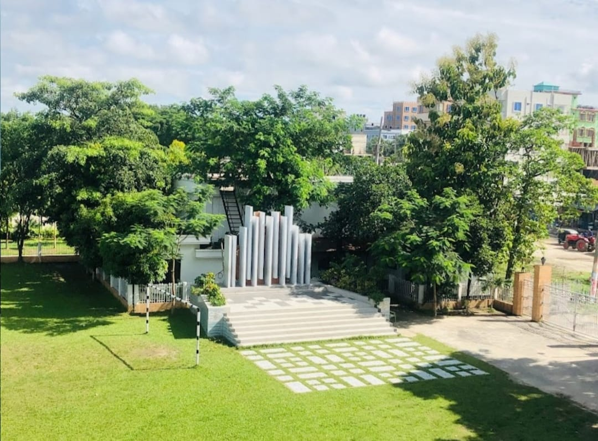
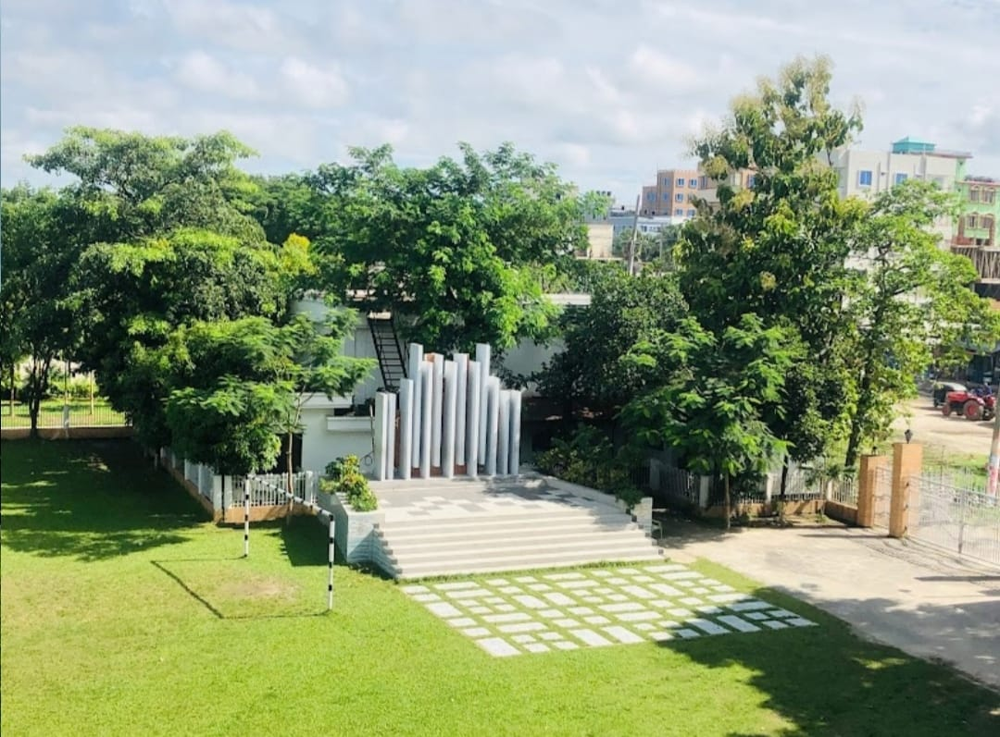

BGFSC:
The name of our school is Bangladesh Gas Fields School & College. It is located in Birasar, Brahmanbaria. The institute was established on 01 January, 2003, marking the beginning of its educational journey.It is categorized as a Higher Secondary, such as a school, college, university, or vocational training center.The institute operates under the board of Comilla, which governs academic standards and examinations.The classes at the institute are conducted in Day, indicating the operational schedule, such as morning, day, or evening shifts.The educational version followed at the institute is Bangla, indicating the language of instruction, such as Bengali or English version.


School's Infrastructure:
It is a four-story building with 44 classrooms, three teachers' rooms, a conference room, a hall room, a prayer room, a computer lab, a science lab, and various club facilities.In addition, there is a large playground in front of the building, a Shaheed Minar, two canteens, seating arrangements for guardians, and a flower garden with various types of plants.
There are 11 clubs for co-curricular activities:
- Debating Club(Bangla)
- Debating Club(English)
- Cultural Club
- Games & Sports Club
- Science Club
- Mathematics Club
- fine Arts Club
- Islamic Cultural Club
- Scout and Girl's Club
THE SCHOOL--
Basic Info
| INSTITUTE'S NAME | DATE of ESTABLISHMENT | BOARD | LOCATION | VERSION |
|---|---|---|---|---|
| Bangladesh Gas Fields School & College | 01 January, 2003 | Cumilla | Birashar, Brahmanbaria | Bangla |